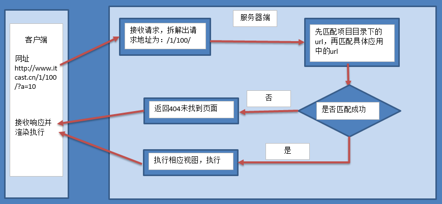

路由说明

1. 路由定义位置
Django的主要路由信息定义在工程同名目录下的urls.py文件中，该文件是Django解析路由的入口。
每个子应用为了保持相对独立，可以在各个子应用中定义属于自己的urls.py来保存该应用的路由。然后用主路由文件包含各应用的子路由数据。
除了上述方式外，也可将工程的全部路由信息都定义在主路由文件中，子应用不再设置urls.py。如：
from django.conf.urls import url
from django.contrib import admin
import users.views
urlpatterns = [
url(r'^admin/', admin.site.urls),
url(r'^users/index/$', users.views.index)
]
2. 路由解析顺序
Django在接收到一个请求时，从主路由文件中的urlpatterns列表中以由上至下的顺序查找对应路由规则，如果发现规则为include包含，则再进入被包含的urls中的urlpatterns列表由上至下进行查询。
值得关注的由上至下的顺序，有可能会使上面的路由屏蔽掉下面的路由，带来非预期结果。例如：
urlpatterns = [
url(r'^say', views.say),
url(r'^sayhello', views.sayhello),
]
即使访问sayhello/路径，预期应该进入sayhello视图执行，但实际优先查找到了say路由规则也与sayhello/路径匹配，实际进入了say视图执行。
提示：
需要注意定义路由的顺序，避免出现屏蔽效应。
3. 路由命名与reverse反解析（逆向）
3.1 路由命名
在定义路由的时候，可以为路由命名，方便查找特定视图的具体路径信息。
1) 在使用include函数定义路由时，可以使用namespace参数定义路由的命名空间，如
url(r'^users/', include('users.urls', namespace='users')),
命名空间表示，凡是users.urls中定义的路由，均属于namespace指明的users名下。
命名空间的作用：避免不同应用中的路由使用了相同的名字发生冲突，使用命名空间区别开。
2) 在定义普通路由时，可以使用name参数指明路由的名字，如
urlpatterns = [
url(r'^index/$', views.index, name='index'),
url(r'^say', views.say, name='say'),
]
3.2 reverse反解析
使用reverse函数，可以根据路由名称，返回具体的路径，如：
from django.urls import reverse # 注意导包路径
def index(request):
return HttpResponse("hello the world!")
def say(request):
url = reverse('users:index') # 返回 /users/index/
print(url)
return HttpResponse('say')
- 对于未指明namespace的，reverse(路由name)
- 对于指明namespace的，reverse(命名空间namespace:路由name)
4. 路径结尾斜线/的说明
Django中定义路由时，通常以斜线/结尾，其好处是用户访问不以斜线/结尾的相同路径时，Django会把用户重定向到以斜线/结尾的路径上，而不会返回404不存在。如
urlpatterns = [
url(r'^index/$', views.index, name='index'),
]
用户访问 index 或者 index/ 网址，均能访问到index视图。
说明：
虽然路由结尾带/能带来上述好处，但是却违背了HTTP中URL表示资源位置路径的设计理念。
是否结尾带/以所属公司定义风格为准。